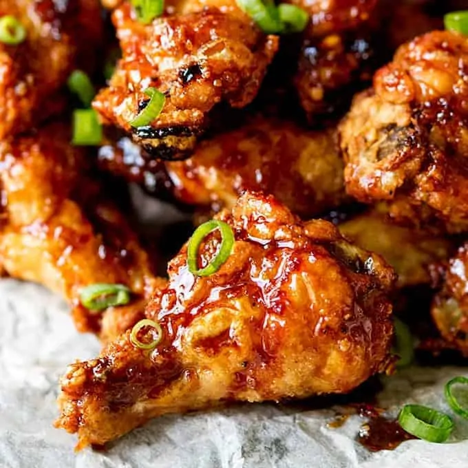

Bang Bang Chicken Wings

Air fried wings tossed in a perfectly balanced sauce with a sweet heat that lingers in a way that makes you want more. You could also grill, fry or roast them before tossing them in the sauce.
Ingedients
- 1kg chicken wings and drummettes
- 1 tablespoon oilve oil
- 2 teaspoons kosher salt, divided
- 1/2 teaspoon granulated garlic
- 1/2 cup mayonnaise
- 1/4 cup sweet chilli sauce
- 1 tablespoon Sriracha sauce
- 1/4 sliced green onion
Steps
- Toss wings with olive oil, 1 1/2 teaspoons salt, pepper, and garlic powder. Preheat the air fryer to 200 degrees C according to manufacturer’s directions.
- Add wings to the air fryer basket, and cook until golden brown and crispy, tossing every 8 to 10 minutes, 23 to 25 minutes total. You may have to work in batches.
- Meanwhile, combine remaining 1/2 teaspoon salt with mayonnaise, sweet chili sauce, and Sriracha in a large bowl. Stir well to combine and set aside.
- Toss hot wings with sauce mixture until well coated. Sprinkle with green onions and serve.